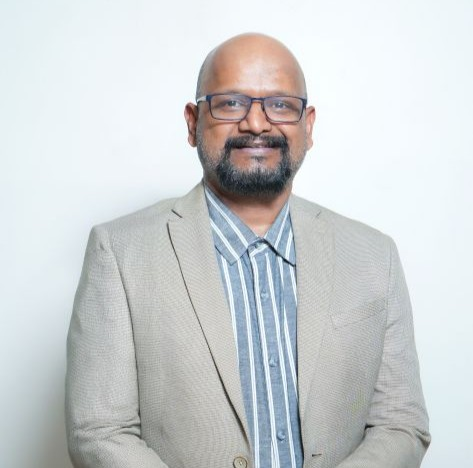

Dr. Abhijit Nair
Associate Professor & Dean
Dr. Abhijit Nair has over 25 years of experience and held prominent academic and administrative positions, including Dean-Online Programs, Pan-Campus Area Chair for Liberal Arts and Business Communication, Head Placements and Head…